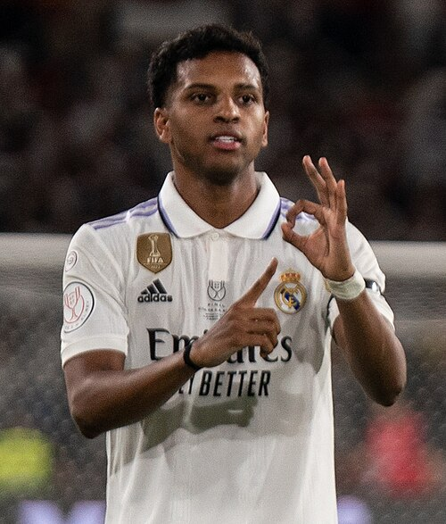
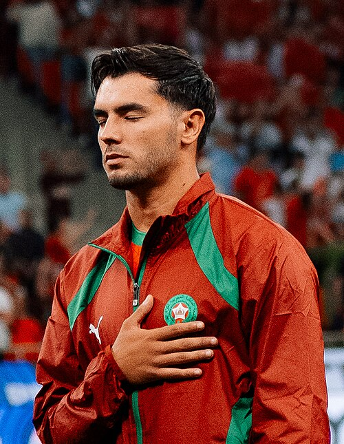
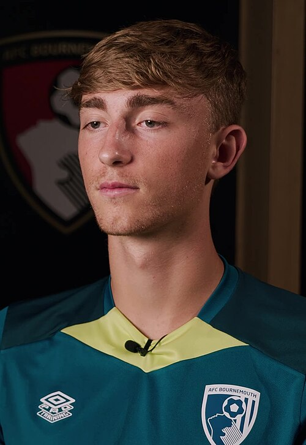
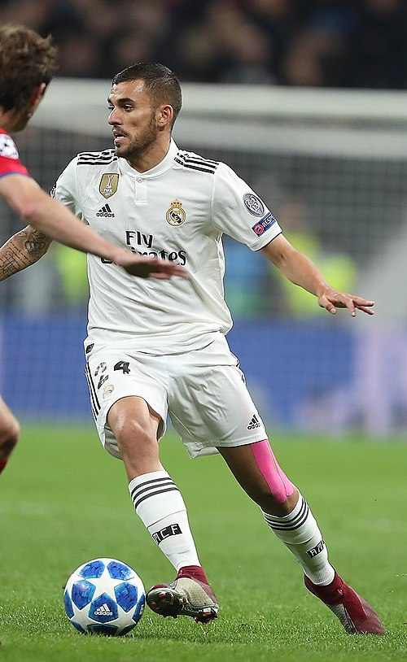
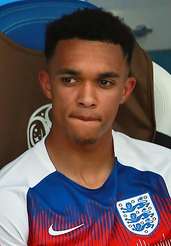
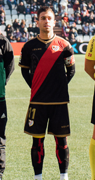
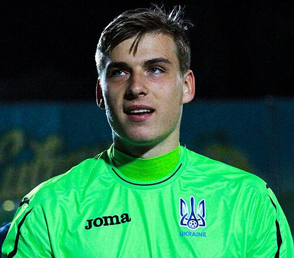

Real Madrid Club de Fútbol Portfolio
Current roster, squad value, top assets, U23 assets, honours, and market risk.

Real Madrid Club de Fútbol
Spain | La Liga | Europe | UEFA
Roster source: Real Madrid Club de Fútbol | Checked 2026-05-24
Market Score vs Age
Squad portfolio shape by age and market score.
How to read: Each point shows how squad age relates to market value.
Position Strength
GK, CB, FB, CM, W, CF portfolio balance.
How to read: Bars compare strength across the main football position groups.
Squad Age Curve
Age distribution across current senior, prime, and veteran player groups.
How to read: Use this chart to spot youth pipeline, prime core, and veteran risk.
U23 Pipeline
Young player supply by market score, role security, and squad confidence.
How to read: Higher bars indicate stronger young-player depth inside the current squad.
Current Player Roster
| Player | Age | Position | ARES Score | Market Score | Tier | Trend | Profile |
|---|---|---|---|---|---|---|---|
| Franco Mastantuono | 18 | MF | 69.1 | 83.8 | Blue-Chip Asset | Rising | Open profile |
| Álvaro Fernández | 23 | DF | 68.7 | 82.8 | Blue-Chip Asset | Rising | Open profile |
| Αrda Güler | 21 | MF | 69.7 | 82.7 | Blue-Chip Asset | Rising | Open profile |
 Rodrygo | 25 | W | 67.6 | 80.5 | Rising Asset | Rising | Open profile |
 Brahim Díaz | 26 | MF | 67.6 | 80.0 | Rising Asset | Rising | Open profile |
 Dean Huijsen | 21 | DF | 69.0 | 79.8 | Rising Asset | Flat | Open profile |
| Federico Valverde | 27 | MF | 70.9 | 77.8 | Rising Asset | Flat | Open profile |
| Raúl Asencio | 23 | DF | 66.6 | 76.0 | Rising Asset | Flat | Open profile |
| Éder Militão | 28 | DF | 70.0 | 75.8 | Core Starter | Flat | Open profile |
 Dani Ceballos | 29 | MF | 71.7 | 74.4 | Core Starter | Flat | Open profile |
 Trent Alexander-Arnold | 27 | MF | 70.5 | 73.5 | Core Starter | Falling | Open profile |
 Adrián Embarba Blázquez | 34 | W | 67.0 | 71.7 | Core Starter | Rising | Open profile |
 Andriy Lunin | 27 | GK | 55.3 | 71.0 | Core Starter | Flat | Open profile |
U23 Assets
| Player | Age | Position | Market | Reason |
|---|---|---|---|---|
| Franco Mastantuono | 18 | MF | 83.8 | Development MF profile with La Liga context, 1000 beta-estimated minutes, and licensed Commons photo coverage. |
| Álvaro Fernández | 23 | DF | 82.8 | Upside DF profile with La Liga context, 2202 beta-estimated minutes, and licensed Commons photo coverage. |
| Αrda Güler | 21 | MF | 82.7 | Upside MF profile with La Liga context, 1840 beta-estimated minutes, and licensed Commons photo coverage. |
| Dean Huijsen | 21 | DF | 79.8 | Upside DF profile with La Liga context, 3045 beta-estimated minutes, and licensed Commons photo coverage. |
| Raúl Asencio | 23 | DF | 76.0 | Upside DF profile with La Liga context, 1122 beta-estimated minutes, and licensed Commons photo coverage. |
Club Honours And Trophies
| Competition | Type | Count | Years | Source |
|---|---|---|---|---|
| Type Competition Titles Seasons | Team honour | 1 | https://en.wikipedia.org/wiki/Real_Madrid_CF | |
| Copa del Rey 20 1905 , 1906 , 1907 , 1908 , 1917 , 1934 , 1936 , 1946 , 1947 , 1961 | Team honour | 20 | 1905, 1906, 1907, 1908, 1917, 1934, 1936, 1946 | https://en.wikipedia.org/wiki/Real_Madrid_CF |
| Copa de la Liga 1 1985 | Team honour | 1 | 1985 | https://en.wikipedia.org/wiki/Real_Madrid_CF |
| Supercopa de España 13 1988 , 1989 , 1990 , 1993 , 1997 , 2001 , 2003 , 2008 , 2012 , 2017 | Team honour | 13 | 1988, 1989, 1990, 1993, 1997, 2001, 2003, 2008 | https://en.wikipedia.org/wiki/Real_Madrid_CF |
| Copa Eva Duarte 1 1947 | Team honour | 1 | 1947 | https://en.wikipedia.org/wiki/Real_Madrid_CF |
| Continental European Cup/UEFA Champions League 15 1955 | Team honour | 16 | 1955, 1956, 1957, 1958, 1959, 1965, 1997, 1999 | https://en.wikipedia.org/wiki/Real_Madrid_CF |
| UEFA Cup/UEFA Europa League 2 1984 | Team honour | 2 | 1984, 1985 | https://en.wikipedia.org/wiki/Real_Madrid_CF |
| UEFA Super Cup 6 2002 , 2014 , 2016 , 2017 , 2022 , 2024 | Team honour | 6 | 2002, 2014, 2016, 2017, 2022, 2024 | https://en.wikipedia.org/wiki/Real_Madrid_CF |
| Latin Cup 2 s 1955 , 1957 | Team honour | 2 | 1955, 1957 | https://en.wikipedia.org/wiki/Real_Madrid_CF |
| Intercontinental Ibero | Team honour | 1 | 1994 | https://en.wikipedia.org/wiki/Real_Madrid_CF |
| Worldwide FIFA Club World Cup 5 2014 , 2016 , 2017 , 2018 , 2022 | Team honour | 5 | 2014, 2016, 2017, 2018, 2022 | https://en.wikipedia.org/wiki/Real_Madrid_CF |
| Intercontinental Cup 3 s 1960 , 1998 , 2002 | Team honour | 3 | 1960, 1998, 2002 | https://en.wikipedia.org/wiki/Real_Madrid_CF |
| FIFA Intercontinental Cup 1 s 2024 | Team honour | 1 | 2024 | https://en.wikipedia.org/wiki/Real_Madrid_CF |
| Copa Federación Centro 4 s 1922 | Team honour | 4 | 1922, 1927, 1943, 1944 | https://en.wikipedia.org/wiki/Real_Madrid_CF |
| record | Team honour | 1 | https://en.wikipedia.org/wiki/Real_Madrid_CF | |
| s shared record | Team honour | 1 | https://en.wikipedia.org/wiki/Real_Madrid_CF |
Transfer Needs
| Need | Position | Reason | Priority | Suggested Profile |
|---|---|---|---|---|
| Role security and U23 depth | Depth risk review | Squad portfolio balance uses ARES score, market score, age curve, and roster coverage. | Medium | Current roster players sorted by Market Score |
Source And Rights Note
Current roster and honours rows are sourced from Wikipedia where structured enough. Club images use safe non-logo Wikimedia Commons media only when a creator, license, source URL, checked date, and rights status are stored in the image registry; otherwise ARES shows a fallback visual.